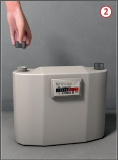
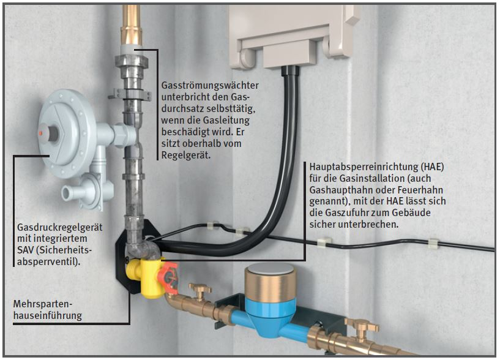

Durch austretendes Gas kann
es zu Bränden, Verpuffungen
und Explosionen kommen.
Allgemeines
Vor Beginn der Arbeiten zugehörige Absperreinrichtungen
schließen und gegen unbefugtes
Öffnen sichern, z. B. durch
Abnehmen des Handrades,
Schlüssels, Ventilgriffes.
Absperreinrichtung auf gasdichtes
Schließen prüfen.
Zum Lokalisieren von Undichtigkeiten
möglichst Gasspürgeräte
einsetzen . Beim Abpinseln oder Einsprühen mit
Schaum bildenden Mitteln können
Hanfdichtungen kurzfristig
aufquellen und somit die Undichtigkeiten
nicht anzeigen.
Niemals offene Flammen zum
Lokalisieren von Undichtigkeiten verwenden.
Vor Wiederinbetriebnahme
Gasleitungen mit Betriebsgas
entlüften und so lange ausblasen,
bis die vorhandene Luft in
der Leitung verdrängt ist. Austretendes Gas-Luft-Gemisch gefahrlos
ins Freie ableiten (z. B.
über Schlauchleitungen).
Stillgelegte und außer Betrieb
gesetzte Leitungen an den Ein- und
Auslässen gasdicht verschließen,
z. B. durch Stopfen,
Kappen, Steckscheiben, Blindflansche.
Geschlossene Absperreinrichtungen
gelten nicht als dauerhaft dichte Verschlüsse.
Vor dem Reinigen von Gasleitungen Gasgeräte, Druckregler, Gaszähler und Armaturen
ausbauen. Das Ausblasen muss
grundsätzlich ins Freie erfolgen.

Schutzmaßnahmen
Gefährdungsbeurteilung auch unter Berücksichtigung der Brand- und Explosionsgefährdung erstellen und dokumentieren.
Sicherstellen, dass sich keine
gefährlichen Gas-Luft-Gemische in Räumen bilden können.
Gasleitungen an den Ein- und
Auslässen gasdicht verschließen,
z. B. mit Sicherheitsstopfen
bzw. Sicherheitskappen, die
nur mit Sonderwerkzeug geöffnet
werden können, wenn:
ein unbeabsichtigtes, mutwilliges
oder leichtfertiges Öffnen
von Absperreinrichtungen
nicht ausgeschlossen werden
kann oder
die Arbeitsstelle auch nur
kurzfristig verlassen werden
muss.

Bei unkontrolliertem Gasaustritt
besteht höchste Gefahr. Die
wichtigsten Sofortmaßnahmen sind:
Gaszufuhr absperren,
Raum oder Bereich durchlüften,
Zündquellen beseitigen oder fernhalten,
Zündfunken vermeiden; keine Schalter, Klingeln oder Telefone benutzen, keine Stecker ziehen,
Elektroinstallation freischalten
lassen, jedoch außerhalb des
Gefahrbereiches,
evtl. Polizei, Feuerwehr und
Gasversorgungsunternehmen
benachrichtigen,
Gefahrbereich gegen den
Zutritt Unbefugter sichern,
Brände in der Gasinstallation
nur löschen zur Rettung von
Personen oder zum Absperren
der Gaszufuhr (Explosionsgefahr
durch unverbrannt austretendes Gas).
Nach dem Absperren ist das zu
bearbeitende Leitungsteil zu
entspannen. Das dabei austretende Gas ist z. B. über
Schläuche gefahrlos ins Freie
abzuleiten.
Bei geringen Mengen kann das
Gas auch an einer Austrittsstelle
über geeignete Brenner, z. B.
Kochstellenbrenner, abgebrannt
werden.
Vor dem Trennen, Stillegen
und Entfernen von Gasleitungen
ist die Trennstelle zum Schutz
gegen Berührungsspannung und
Funkenbildung zu überbrücken.
Überbrückung mit hochflexiblem,
isoliertem Kupferseil
(Ø ≥ 16 mm2, Länge ≤ 3,0 m)
vornehmen. Für guten Übergangswiderstand
sorgen, z. B.
durch blanke Kontaktflächen.
Keine Haftmagnete verwenden.
Besteht die Gefahr des Ausströmens
von brennbaren Gasen,
muss sichergestellt sein,
dass der Arbeitsplatz schnell
und gefahrlos verlassen werden
kann. Fluchtwege sind freizuhalten.
Nach Abschluss der Arbeiten
ist die Dichtheit der Gasinstallation
festzustellen und zu kontrollieren,
dass alle Auslässe dicht
verschlossen sind. Dabei dürfen
die Leitungen nicht verdeckt und
die Verbindungen nicht beschichtet
sein.
Beschäftigte mindestens einmal
jährlich unterweisen. Die
Teilnahme ist schriftlich festzuhalten.
Besteht bei Arbeiten an Gasleitungen Gesundheits-, Brand- oder Explosionsgefahr, muss der Unternehmer eine zuverlässige und besonders unterwiesene Person mit der Aufsicht schriftlich beauftragen. Die Aufsichtsperson muss während dieser Arbeiten ständig an der Baustelle anwesend sein.